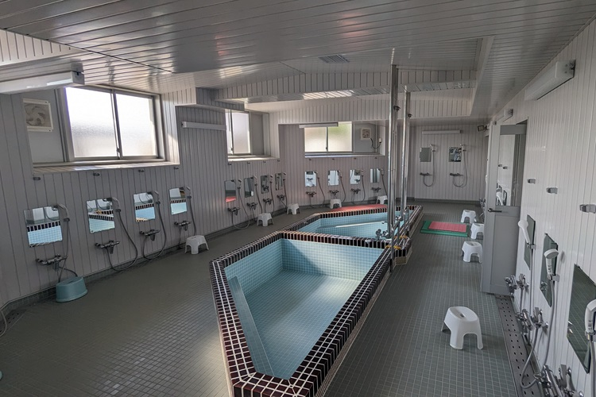

Facility
寮は、北寮・南寮・新南寮・東寮・白萩寮の5つの居住棟に分かれており、それぞれ誰が入寮するかある程度決まっています。 また、高学年になるまでは1人部屋に入ることはできません。
また、各棟にパソコンやプリンタ、LANが整備された「自習室」、テレビやこたつが設置されている「談話室」、冷蔵庫やコンロが設置されている「補食室」があります。また、寮内各所に自動販売機も設置されています。さらに寮事務室がある北寮には卓球なども楽しめる「娯楽室」のほか、体調管理のために「保健室」・「休養室」なども完備されています。
北寮
主に1年生の男子が入寮します。1階は委員会の委員長や留学生などが生活しているため1年生は2,3階で生活します。1部屋に2人で生活します。
南寮
主に2~4年生の男子が入寮します。4年生は1人部屋ですが、2,3年生は2人部屋になります。部屋は北寮より狭く、5つの寮の中で1番古い建物と言われているだけあって節々に年季を感じますが、現在改修工事が行われているため綺麗になるかもしれません。
新南寮
新南寮は少し特殊で、女子と2~4年生の男子が入寮します。1階は女子、2階は男女、3階は男子となっているが、男女共にお互いの寮に入ることは禁止されているため境目には防犯カメラや施錠可能なドア、触れると警報が鳴るアコーディオンカーテンなどが設置されており施錠可能なドアは女子のみが出入りすることができます。また、この寮は主に3~4人部屋です。
東寮
主に4,5年生男子が入寮します。5つの寮の中で1番新しく、すべての部屋が1人部屋のため高学年しか入寮することはできません。
白萩寮
女子が入寮します。新南寮と違い女子しか生活していません。新南寮よりきれいなため人気があります。
居室(北寮)
居室(新南寮)
自習室(東寮)
自習室(新南寮)

談話室(白萩寮)
図書室
- 
大浴場

脱衣室
娯楽室
食堂
南寮補食室